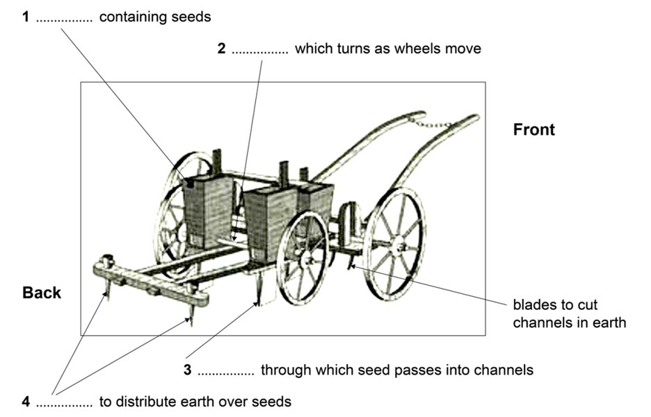

Phiếu trả lời Listening
Bấm số câu để nhảy tới câu đó. Bài làm được tự lưu trên máy này. Thời gian thi thật: khoảng 30 phút.
PART 1 Questions 1–10
Questions 1–6
Complete the sentences below.
Write NO MORE THAN TWO WORDS AND/OR A NUMBER for each answer.
Problems with flat
Elinor has been in the flat for 3 months.
1 Elinor shares the flat with her
2 Elinor must contact the landlord’s about the repairs.
The repairs cannot be started until next week.
3 Elinor may have to pay £ towards some repairs.
4 The agent suggests that Elinor should contact a for urgent repairs.
5 Elinor can be contacted on her number.
6 Elinor will need to sign the after the repairs are completed.
Questions 7–10
Choose the correct letter, A, B or C.
7 According to the agent, what may be the problem with the bathroom window?
8 The agent says that the electricity should be checked
9 The agent thinks the central heating system should be
10 What was the problem in the hall?
📜 Lời thoại Part 1
You will hear a woman talking to an agent who is responsible for flat rentals. First, you have some time to look at questions one to six. Now listen carefully and answer questions one to six.
Hello, I've come in because I've got some problems in the flat I'm renting. Oh, right. Can I have your name? Yes, it's Eleanor Wazinski.
I've been renting the flat at 13 Polworth Road for three months now. Let me see. I'll just get the details.
Ah, yes, here we are. Are you alone in the flat? No, I originally rented it with a friend, but now my cousin is there. Right, so there's two of you.
And what's the problem? Loads of things have gone wrong or are not working. And my contract says the landlord is responsible for them. Yes, that's right.
He will end up paying for the repairs, but in the first instance, you need to contact his service manager as he deals with the day-to-day running of the flats. Oh, OK. How do I get hold of him? I've got the contact details here.
I'll write them down for you. But anyway, just for our records, I should make a list of the problems. Do you know how long they normally take to fix things? I'm afraid you'll have to wait till next week before they can come over.
Oh, dear. Don't they do things more quickly if they're urgent? Not in my experience. Now, just looking through your contract here, it says you are expected to pay £50 towards the cost of anything caused by wear and tear.
Yes, I realised that. That's not the problem. But I am worried about a couple of things getting worse over the next week.
Well, in that case, you can get a private company to fix it and get the money back from the landlord. I can give you a list of names and you can try to get them out today. OK.
I think I'll have to do that. Right. Now, where can the landlord get hold of you? We've only got your college phone number.
Can we get you on that? It's very difficult, but you could leave a message on my mobile if I'm in class. I'll give you the number, shall I? OK, that'd be great. I'm sure the landlord will need to speak to you because you'll have to arrange to meet up with him after the work is completed to sign the agreement that the work has been done.
OK. Before you hear the rest of the conversation, you have some time to look at questions 7 to 10. Now listen and answer questions 7 to 10.
Now, can you tell me exactly what's gone wrong? Yeah, well, first of all, there's a window in the bathroom that wouldn't open. The paint seemed to be stuck. We've managed to get it open, though I don't know what damage it's caused.
I see. Yes, the landlord may want to check that the lock on it still works. He checked all the taps and plumbing in the bathroom before you moved in, so they should be OK.
But it may be worth another look, so I'll ask him to do that too. Oh, right. Then we've noticed that the lights keep flickering, so I'm worried it means there's a problem with the electricity.
Because we've also noticed that the washing machine keeps stopping and starting in the middle of a wash. Well, that'll need looking at separately by a washing machine repair company. We'll get them out and after they've looked at it, we can get someone else in to see if there's a more general problem with the electricity.
The main switch may need replacing. It's quite old. Actually, if we're getting an electrician out for that, he could look over the heating system before the winter sets in, couldn't he? It was new last year, though, so it shouldn't break down.
That would be a good idea. The only other thing is in the hall. The carpet had started curling up at the edges where the door opens, and we've had to stick it down.
We just used ordinary glue so it didn't mark the paintwork. I hope that's OK. Hmm, you've had quite a few problems, haven't you? That's not very satisfactory.
I will get on to the landlord. I'm really sorry about this. Well, as long as it can all be sorted quickly.
That is the end of part one. You now have 45 seconds to check your answers to part one.
PART 2 Questions 11–20
Questions 11–16
Choose the correct letter, A, B or C.
11 Why does Jane recommend visiting the Music Tent on Tuesday?
12 When do the educational workshops take place in the Music Tent?
13 Why does Jane recommend going to the library to buy a ticket?
14 What will history lovers find interesting about Macquarie House?
15 The Big Barbecue is different this year because
16 What can you do at the Railway Museum?
Questions 17 and 18
Choose TWO letters, A–E.
17–18 Which TWO free things does the family ticket on the steam train include?
Questions 19 and 20
Choose TWO letters, A–E.
19–20 Which TWO things apply when voting for Our Favourite Place?
📜 Lời thoại Part 2
Part two. You will hear a tourism representative recommending some local events on a radio programme. First, you have some time to look at questions 11 to 16. Now listen carefully and answer questions 11 to 16.
Good afternoon, listeners. Thanks for tuning in to 4KB. Jane Lewis is with us from Tourism Queensland to tell us about the annual Queensland Festival.
Jane, welcome. Morning, John. So much is going on for the next couple of weeks in our festival.
Here in the state's capital of Brisbane, the music tent opens this week, and this will be an event not to be missed. As the name suggests, the music tent is an enormous tent where musical performances and activities will be going on throughout the day for the next two weeks. Monday is going to be really busy as it's a public holiday and the first day of the event.
It's going to be lots of fun, but if you're free, it's probably a better option to leave it till Tuesday, unless you love crowds. The following day is when the masterclasses take place, and this requires pre-registration, so you can't just turn up, I'm afraid. The weekend educational workshops were so popular last year that they have been extended this year.
They now run each afternoon from one till four o'clock before the evening performances start from five. If you're learning to play an instrument, these workshops are great fun, so make sure you get along there. Tickets for the music tent events are available from the door or you can purchase them at the ticket office located in the city centre.
For the best deal, though, take proof of your home address to any library. As a local resident, you will be able to purchase discounted tickets. Apart from music, we'll also be celebrating our local history with a special walking tour around Brisbane's city centre.
Not to be missed on the walk is a tour of Macquarie House, the home of Queensland's first governor. It has lovely gardens you can walk around or picnic in. This building has a fascinating history because it was built on the very same spot where the first settlers landed, so it's really worth a visit if you enjoy learning about our local history.
No Australian event is complete without a barbie, and I think the Big Barbecue is going to be fantastic. It's not quite as big as the Millennium Year Barbecue, but there'll be local and international bands playing on the main stage for the first time this year at no extra cost. As always, the food will be prepared by top local chefs.
My mouth is watering already. I really recommend going along to the Railway Museum during the festival because trains are such an important part of Queensland's history. On loan from Queensland Rail at the moment is our very first steam train.
You won't be able to see it in operation, but you can hop on board and have a meal in the old dining carriage. There is also a wonderful display of uniforms that have been worn over the last 100 years. Before you hear the rest of the talk, you have some time to look at questions 17 to 20.
Now listen and answer questions 17 to 20. Another really special opportunity is a return trip on our only remaining steam train, which runs from Ipswich to Toowoomba. If you purchase a family ticket, as well as a trip on the train, you receive a free Australian flag each to wave while aboard.
There is a small charge for the Ipswich museum tour, but I think it's worth it as it makes an educational day out. The documentary film you can see there is interesting and it's well worth the $2 entry fee. On the return train journey, the kids get a lovely activity book designed to teach them about the history of the steam train.
Don't forget to bring your sunscreen and hats. It's going to be hot up there in Toowoomba at this time of year. And finally, I'm going to tell you about an event called Our Favourite Place.
This is an opportunity for the public to vote for their favourite spot anywhere in the state. Maybe a park or restaurant. It's up to you.
You can vote even if you're not living in the area at the moment. You can vote as often as you like by sending in the voting form or if you prefer, send a text message from any Australian mobile phone number with the name of the location. It's so easy.
Not much time left, though, so get those votes in as soon as possible. The winning location will be announced on the last Saturday of the festival. Also, remember that no age limit applies for this one.
So this is a great way to get the whole family involved. Well, thank you very much for that, Jane. Now, we have that is the end of part two.
You now have 30 seconds to check your answers to part two.
PART 3 Questions 21–30
Complete the notes below.
Write NO MORE THAN THREE WORDS for each answer.
NOTES ON PRESENTATION AND FEEDBACK Timing Likely period for presentation: 14th – 24th June Time of day: Format First part: 40-minute presentation to the Second part: 20-minute interview with Dr Brown Requirements Must bring to discussion:
Feedback (given during interview) Students will receive:
Criteria Good projects will show the student:
Next stage Stage Two:
Further information from website: www. .com |
📜 Lời thoại Part 3
Part three. You will hear a discussion between a student called Simon and his tutor about a presentation Simon is going to give.
First, you have some time to look at questions 21 to 25. Now listen carefully and answer questions 21 to 25. Good morning, Simon.
Come and sit down. How are you? Fine. Just a bit worried about the presentation.
I wanted to clear up a few points with you, if that's OK, Dr Azari. Of course. Well, first of all, I wonder if you've got any clearer idea of when it's going to be.
Lots of the other students are talking about early June, around the 6th to the 7th. No, it won't be as early as that. It won't be before the open day on the 11th.
The 14th to the 24th of June is the period we've been pencilling in. Oh, right. A bit of a breathing space then.
Yes. And you know that they take place in the lecture hall during the early evening. Yes, I remember you saying that.
Yes, we discussed it. Can I also just check the format? Yes. There are two parts.
The first part is about 40 minutes, and that's when you give the presentation to your seminar group. OK, right. I've got that.
And that's followed by a 20-minute interview with Dr Brown. That's the part that I'm less clear about, to be honest. What sort of thing do I need to have with me for the interview? Just the materials I've used in the presentation? Well, yes, of course.
And he specifically asked that students bring along a list of objectives as well. This will form the basis for the discussion. Yes, right.
And he's also asking each student to bring along their project outline. Oh, OK. I suppose it'll help him to see where the different parts of the presentation fit in.
Exactly. And because he's also interested in the sources you've drawn on, you should take your book list along. Everything that has informed your thinking.
OK, got that. And will he be giving me feedback? Oh, yes. That's the whole point of the exercise.
You'll get a checklist from him. Immediately? Yes, he'll fill it in on the spot. And you'll also get what we call thinking questions.
Oh, yes. We had those for the formative essay, didn't we? That's right, you did. And what sort of criteria will he use when giving feedback? Well, basically, the kind of things he'll be looking for are whether you've done wide reading.
Well, I don't think I'll have any problems with that. My book list is six pages long. Right.
But you also need to demonstrate that you can design research. Yes, that's been the hard part. And of course, the usual requirement that you can set out a clear argument.
OK, that's very helpful. And can I ask about stage two after the presentation? Well, if all goes well, which it should, you will need to write your theory chapters. OK, right.
I've already started thinking about those. Good. And in addition to that, you'll have to do your data analysis.
Oh, right. Should I be getting on with that now? Don't worry, Simon. The best thing is to concentrate on the presentation.
I know. I'm always looking ahead. Well, if you do want further information on that, there's always the website.
Have you got the address? Yes, it's www.studentlink. All one word for student link. OK, right. Well, thanks ever so much, Dr.
Azari.
I feel a lot clearer now. Pleasure. That is the end of part three.
You now have one minute to check your answers to part three.
PART 4 Questions 31–40
Questions 31–39
Complete the table below.
Write NO MORE THAN TWO WORDS for each answer.
Research in child psychology
| Past | Present |
|---|---|
| Three aspects of development: social, cognitive, emotional. | These aspects now regarded as being |
Behaviour was studied in artificial contexts. Example: (was related to behaviour of animals in ) |
Awareness that child’s behaviour is influenced by his/her and the situation he/she is in. |
Child was seen as being Parents were held responsible for way child developed. |
No direct link between early influences and child’s |
Influence of Piaget: Young children were believed to be |
Influence of Harriet Reingold: Examples show that children are aware of other people. |
Psychologists did not take culture into account. Example: importance of for babies. |
Guatemalan study – babies are kept in the for first year → no effect on later development |
Question 40
Choose the correct letter, A, B or C.
40 The speaker thinks that one topic which will be examined closely in future is
📜 Lời thoại Part 4
Part four. You will hear the first part of a lecture about some research into child development.
First, you have some time to look at questions 31 to 40. Now listen carefully and answer questions 31 to 40. Good afternoon.
The subject of my lecture today is child psychology. I'm going to talk about research in that area, how it has changed in recent years, and how it's likely to develop in future. First of all, there's the way we look at the subject of child psychology itself.
Traditionally, we used to talk about three different aspects of a child's development. Social development, that's how the child relates to other people. Cognitive development, how a child reasons or explains things to himself.
And emotional development, how the child feels about people and things and events in the world around him. And those three areas were kept very separate, and different psychologists used to work in different areas. But what you have now is the growing realisation that you can't draw those hard and fast boundaries.
The three aspects are all seen to be connected. So that's the first thing. Another thing.
In the past, people tended to study behaviour in artificial contexts. Take, for example, the type of behaviour referred to as learning. Traditionally, it was investigated by studying how animals behave in laboratories.
But now, thanks to psychologists like Vygotsky, there's a growing realisation that you can't isolate things that happened during childhood. Behaviour is very much influenced by the child's background, and by the particular situation that he or she is in at the moment. Is he with peers? Is he with teachers? Is he with parents?
And so on.
Another far-reaching change that has taken place within the last 20 or 30 years concerns the way children themselves are regarded. Formerly, the developing child was regarded as passive, as merely reacting to outside stimulation. Let's take the parent-child relationship.
This was seen as something that parents did to children. And if something then went wrong, then you blamed the parents. But this is a view that simply can't be upheld, because we know now that there are no simple, straightforward correlations between the early influences on a child and its personality.
The reason being that our genes also play a part. And this brings me to the next point. In the past, ideas were very much influenced by the child psychologist, Piaget.
Piaget was very insistent that for the first 5 or 6 years, all children are self-centred. He meant that they project their own feelings and thoughts onto other people. But recently, people have started to listen to other views.
For example, the American psychologist Harriet Rheingold said all along that we must listen to young children and the way they talk, and observe them in all sorts of social situations with an open mind. And she gave examples which illustrate children's awareness of other people very clearly. They are not just thinking of themselves all the time.
And other psychologists have taken up that suggestion. And yes, we have no end of examples now. Then there's another area where things have changed.
In the past, we psychologists had a rather lazy attitude towards culture. It was a factor that we just ignored. If we wanted to study children, we just popped around the corner and got hold of the nearest, most available group of children, and then assumed that what we observed applied to children right across the world.
Let's take one example. The importance of stimulation during the first few weeks of life. It was generally thought that if babies are not sung to, talked to, taken out for walks, shown objects, played with, and so on, then their development was going to be held back.
But a study in Guatemala showed that this is not the case, at least not in all contexts. It is the custom for mothers in one area of that country to keep their babies in the house during the first year. They never take them out, and they don't encourage visitors or noise.
In other words, they actually prevent them from being exposed to the outside world. I won't go into the reasons for this, but the point is that these babies develop into perfectly normal, healthy, intelligent, bright, and active children. And what happens in that first year or so of life apparently has absolutely no negative implications for later development.
So we have to be very careful about the extent to which we make assumptions that everything that we see under our own noses is necessarily universal. So those are some of the changes that have taken place in psychology in recent years. But what about the future? There's already been some very interesting work, which suggests that learning is possible even at the prenatal stage.
The most obvious example is the infant's ability to recognise voices. It's been shown that the moment a child is born, and as soon as one can possibly test it, it is already capable of differentiating the mother's voice from the child's. From that of another female stranger.
And there's simply no explanation other than that the child has acquired this knowledge in the womb. So if I'm asked what's likely to attract a lot of interesting work in future, I'd say it's this combination. That is the end of Part 4. You now have 45 seconds to check your answers to Part 4. That is the end of the listening test.
You now have 10 minutes to transfer your answers to the listening answer sheet.
Phiếu trả lời Reading
Bấm số câu để nhảy tới câu đó. Bài làm được tự lưu trên máy này. Thời gian thi thật: 60 phút.
READING PASSAGE 1 Questions 1–13
You should spend about 20 minutes on Questions 1–13, which are based on Reading Passage 1 below.
Jethro Tull (1674–1741)
Inventor of the Seed Drill
The English gentleman farmer who revolutionised the practice of agriculture
A Jethro Tull was a major pioneer in the modernisation of agriculture. He was born in 1674 in Berkshire, southern England, into a family of land-owning gentry. He studied first at Oxford University and then at the Inns of Court, London, in preparation for a legal or political career. However, ill health caused him to postpone these plans, and after qualifying as a barrister in 1699, he made a tour of Europe, in the hope that the milder climates of France and Italy would alleviate his breathing problems. In every country through which he passed, he made careful observations of the soil and agricultural production, and on his return to England, the young Tull married, then began farming with his father at Howberry Farm in Oxfordshire.
B Tull was determined to improve farming methods and increase crop yield on the family land, and pursued a number of agricultural experiments there. He particularly wanted to increase efficiency in the sowing of seeds. At that time seeds were still thrown by hand across the field in a haphazard manner, in a traditional method known as broadcasting. Tull soon realised this method of random distribution was inefficient, being wasteful of both seed and labour, so he instructed his staff to sow seeds at very precise, low densities. But by 1701, his frustration with their lack of co-operation prompted him to invent a machine to do the work for him.
C Earlier in his life, Tull had once dismantled a pipe-organ, and the application of the technology behind this musical instrument inspired him to devise a drill that would distribute precise amounts of seed into pre-cut channels. Basic seeding devices had been known for almost 2000 years, but Tull took the concept a stage further. In his device, as the main wheels of the drill turned, the cylinder rotated against a spring-held tongue. This allowed seed to pass evenly from the hopper above to a funnel below. From here, the seed was directed at regular intervals into three channels, or furrows, in the earth. These were dug to a specific depth by the blades at the front of the machine. Spikes at the back of the machine then turned the soil over to immediately cover the seeds. Tull’s ‘seed drill’ would limit the wastage of seed, and as the seedlings grew in uniform rows, it would also make it easier to remove any unwanted weeds growing among the crop. Accordingly, each plant would have more space to grow, and although there would be fewer plants, the net yield would be greater.
D Initially the machine was only a limited success, and in 1711 Tull decided to travel around Europe again, both to improve his health and to study agricultural techniques there. Upon his return in 1714, he perfected both his system and machinery. Following practices he had observed in the vine-growing methods of southern Europe, he used an animal-drawn hoe to turn over and pulverise the earth between the rows. He wrongly believed that this practice would release enough nutrients in the soil to nourish the crop, and so eliminate the need for manure to be used to fertilise the soil. His experiments were apparently successful, as he did manage to grow wheat in the same field for 13 successive years without the use of manure. However, it is more likely that it was the turning over and pulverisation of the soil that cut down on the volume of weeds competing with the seed.
E Tull’s complete system eventually proved to be a major influence in the agricultural revolution, and its impact can still be seen in today’s methods. Most subsequent drilling and hoeing implements have been either copies of, or improvements upon his inventions, and his modifications to the basic model of the plough continue to be visible in modern versions. Tull also advocated the use of horses over the oxen, more traditionally used to pull farm machinery, and published a book in 1731 outlining this and other ideas to enhance agricultural efficiency. The book caused great controversy when it appeared, and resistance to his revolutionary theories persisted for many decades. Another century would pass before his eventual vindication. It was only following the editing of his writings in 1822, and the subsequent translations and acceptance in France, that Tull’s ideas finally achieved recognition in his native land. Although in his lifetime Tull’s methods and inventions were dismissed and ridiculed, they were gradually adopted by large landowners, and in time, came to form the basis of modern agriculture.
Questions 1–4
Label the diagram below.
Write ONE WORD ONLY from the passage for each answer.
Jethro Tull’s seed drill

1 containing seeds
2 which turns as wheels move
3 through which seed passes into channels
4 to distribute earth over seeds
Questions 5–8
Answer the questions below.
Write NO MORE THAN TWO WORDS from the passage for each answer.
5 What name was given to the traditional technique of seed-sowing?
6 What type of agriculture gave Tull inspiration on his second tour of Europe?
7 What traditional addition to soil did Tull believe to be unnecessary?
8 What animals did Tull recommend farmers should use to pull their machinery?
Questions 9–13
Do the following statements agree with the information given in Reading Passage 1?
In boxes 9–13 on your answer sheet, write
TRUE if the statement agrees with the information
FALSE if the statement contradicts the information
NOT GIVEN if there is no information on this
9 Tull was employed in the legal profession before taking up farming.
10 The staff on Tull’s farm were unwilling to follow his instructions.
11 Tull reduced the amount of weeds in his wheatfield.
12 Tull lived to see his ideas finally accepted.
13 Tull’s original book, published in 1731, sold very few copies.
READING PASSAGE 2 Questions 14–26
You should spend about 20 minutes on Questions 14–26, which are based on Reading Passage 2 below.
The internal body clock
Each of our cells has an internal ‘clock’ which dictates our daily rhythms. But why?
A From buffalo to bacteria, oaks to algae, all life follows the same relentless 24-hour cycle, which is driven by the rising and setting of the Sun. Or is it? Over 250 years ago, a French scientist performed a simple experiment that blew apart the idea that all life on Earth does the bidding of the Sun. Intrigued by the way some flowers open and close their leaves each day, Jean-Jacques de Mairan put a heliotrope in a darkened room and observed the effect. He was expecting the plant, robbed of sunlight, to cease its daily routine. To his astonishment, its leaves continued to open and close as if in response to some invisible timekeeper.
B But what – and where – is this internal timekeeper? And how does it achieve such astonishing regularity? These are the mysteries at the forefront of chronobiology, the study of the effect of time in living organisms. The search for answers is about more than just tying up some scientific loose ends. Internal ‘clocks’ clearly cause a lot of hardship. When an individual’s ‘clock’ is knocked out of synchronization through having to work at night or go on long-haul flights, that person can be left utterly unable to think or act. Yet even when these ‘clocks’ work correctly, the natural rhythms of alertness they generate prove dangerous: traffic accident statistics show two deadly peaks, at 4 a.m. and again twelve hours later when people are at their least alert.
C During the 1970s, best-selling books began to emerge claiming such phenomena were manifestations of so-called biorhythms, a set of three cycles governing physical, emotional and intellectual traits. Said to start from the moment of birth and repeat every 23, 28 and 33 days respectively, they were supposed to result in ‘critical days’ when one or more cycles led to sub-optimal performance, with unfortunate consequences.
D Scientists have since dismissed biorhythms as pseudoscience, insisting the existence of the three cycles has no basis in fact. In 1998, Dr Terence Hines of Pace University, New York State published the most comprehensive study of the claims made for biorhythms, reviewing the results of over 130 investigations. He found that three-quarters of them failed to provide any support for biorhythms. Most of the remainder contained blunders ranging from faulty mathematics to basic errors in statistics, while the handful of positive studies were explicable as flukes.
E But there is no doubting the existence of 24-hour biological cycles – or, rather, ones roughly 24 hours long. Following de Mairan’s pioneering work, other researchers found that when deprived of the cues provided by sunlight, organisms settle down to ‘free-running’ cycles that are close to, but rarely exactly, 24 hours. In the case of humans, the cycle is typically around 24.5 hours long. This is the so-called ‘circadian’ cycle (from the Latin meaning ‘about a day’), the length of which is generated by the mysterious internal ‘clock’.
F During the late 1960s, chronobiologists believed they had found the ‘clock’, in the form of the suprachiasmatic nucleus (SCN), a collection of nerves in a region of the brain known as the hypothalamus. Linked to photosensitive cells in the eye, the SCN senses daylight and triggers the release of hormones like melatonin, which keep body functions in synchronization with the time of day. For a few years the SCN was regarded as the ultimate pacemaker – at least in higher organisms such as ourselves. But in 1971, scientists at the California Institute of Technology working with fruit flies found evidence for something truly amazing. Fruit flies appeared to have genes affecting the daily rhythm of their behavior – suggesting that there are ‘clocks’ inside each of their cells. Further evidence for this emerged in 1995, when researchers at Massachusetts General Hospital isolated nerve cells from the SCN, and found they kept up a circadian cycle without help from daylight. Finally in 1997, scientists at Northwestern University in Illinois found a gene that regulates the daily rhythms of cellular activity in mammals.
G The details of how this gene, known as CLOCK, actually works are still being investigated, but they could culminate in better ways of coping with shift-work and jet-lag. Professor Takahashi, who led the research, says that now that we know that circadian clocks exist throughout our bodies, we will need new strategies and therapeutics to reset all of our cells. But how do all the biochemical ‘clocks’ inside their cells stay in synchronization and why did organisms bother to acquire a link with sunlight? So far, no-one knows, though there are several theories. For example, sunlight might be useful in keeping the myriad cellular ‘clocks’ in lockstep.
H In the search for answers, researchers are studying the behavior of a microbe called cyanobacterium. In 2005, a team at Nagoya University, Japan, showed that chemical reactions between three proteins produced by this bacterium ebbed and flowed on a 24-hour cycle. Cyanobacterium is the oldest form of life on Earth, so this suggests that cellular ‘clocks’ have existed for over three billion years. All subsequent organisms have followed suit, says Professor Johnson of Vanderbilt University, Tennessee. ‘Bacteria, fungi, plants and animals all appear to have evolved clock systems independently from each other.’ Quite why is still unknown. But one thing is clear: the daily routine of life is certainly not a modern invention.
Questions 14–18
Reading Passage 2 has eight paragraphs, A–H.
Which paragraph contains the following information?
Write the correct letter, A–H, in boxes 14–18.
14 support for an earlier finding from experiments on insects
15 criticism of the way some research data was analysed
16 reference to a basic test on a plant
17 a statement that the length of natural cycles varies slightly between living things
18 reference to a theory that became popular with the public
Questions 19–22
Complete the summary below.
Write NO MORE THAN TWO WORDS from the passage for each answer.
An overview of research into the existence of the internal ‘clock’ Towards the end of the 1960s, research into the SCN, which is located in the hypothalamus, led chronobiologists to believe they had found the internal ‘clock’ at last. Their theory was based on the fact that certain hormones that regulate the timing of physical functions are controlled by the SCN. The SCN is able to perceive as a result of connections to the eye. Several years later, research involving showed that the timing of their normal actions was regulated by certain , or ‘clocks’, in their cells. Thus the internal ‘clock’ is not an individual mechanism, as previously thought, but exists within each cell. Other scientists went on to conduct experiments in the dark that proved that a was maintained by individual SCN cells. |
Questions 23 and 24
Choose TWO letters, A–E.
23–24 Which TWO of the following problems are stated as being linked with the internal ‘clock’?
Questions 25 and 26
Choose TWO letters, A–E.
25–26 Which TWO of the following issues relating to internal ‘clocks’ remain to be solved, according to information in the passage?
READING PASSAGE 3 Questions 27–40
You should spend about 20 minutes on Questions 27–40, which are based on Reading Passage 3 below.
The origin of language
Theories on the origin and evolution of language have been a major area of my research for many years. By 1859, when British scientist Charles Darwin published The Origin of Species, there was already a great deal of interest in this subject. However, the debate became plagued by strange theories, so much so that in 1866 the influential Société de Linguistique de Paris banned all discussions about the origin of language. The ban lasted for more than a century, before a surge of research began during the 1990s. Linguists, psychologists, anthropologists, and archaeologists now frequently debate the origin of language and have published many articles and books on this topic. And yet, despite almost frenzied activity, limited progress has been made.
I believe there are four reasons for this. The first is an insufficient concern with the archaeological and fossil proof of the brains and behaviour of our human ancestors. Many theories to date rely on an assumed association between brain size and language abilities, without acknowledging the problem this creates: fossil evidence indicates that the Neanderthals* had larger brains than modern humans, Homo sapiens, but archaeological evidence indicates that the Neanderthals lacked a capacity for language. So something is seriously amiss with those theories.
That ‘something’ might relate to the second reason for limited progress: insufficient concern with the other major aural and vocal communication system of modern humans: music. Even though the Société de Linguistique de Paris had nothing to say about studying the origin of music, academics appear to have had a self-imposed ban, with limited discussion of this issue during the 19th and 20th centuries. However, there are notable exceptions that should be acknowledged. One is the aforementioned Charles Darwin who, in his 1871 book on human evolution, The Descent of Man, devoted several pages to the development of music. Another is the renowned ethnomusicologist John Blacking, whose 1973 book, How Musical is Man?, broached the idea that music is an inherent and universal human quality.
The origin of music deserves as much attention as that of language, as we cannot treat one without the other. Those writers who had evidently annoyed the Société de Linguistique de Paris were quite aware of this. For them, music and language were intimately linked; the French writer and philosopher Jean-Jacques Rousseau’s On the Origin of Language (1781) was a reflection on both music and language. In contrast, Morten Christiansen and Simon Kirby’s book, Language Evolution (2000), which they conceived as ‘a definitive book on the subject,’ failed to mention music in any of its 17 chapters. Those authors have an important lesson to learn from Rousseau and other writers of his time who addressed the origin of language.
Music is a universal feature of human society and plays a significant role in the lives of all individuals. Indeed, music is perhaps in even greater need of study than language: the latter has a self-evident function — the transmission of information — and can be readily accepted as a product of evolution, even if its specific evolutionary history remains unclear. But what is the point of music?
That question leads directly to a third reason for our lack of progress in understanding how language evolved, and indeed the human mind in general: an insufficient concern with emotion. If music is about anything, it is about expressing emotion. But while archaeologists have put significant effort into examining the intellectual capacities of our ancestors, their emotional lives have been sorely neglected. This has contributed to the neglect of music, which, in turn, has constrained our understanding of language.
There is one further reason why progress has been limited: those who have been most influential regarding the evolution of language have simply got it wrong, and misled everyone else. Linguist Derek Bickerton has made an important contribution towards our understanding of the origin of language by bringing his profound knowledge of linguistics to the discussions that have occurred. But Bickerton’s idea that the precursor of modern language consisted of words strung together with limited, if any, grammar is, I believe, fundamentally mistaken. Bickerton refers to this precursor as ‘proto-language’ and suggests that it was similar to the type of ‘language’ spoken by young children today, and mastered by apes through the use of computer keyboards. This idea has dominated the field of language origins for the last two decades, and is one that I once found persuasive. But I now understand that it is not only flawed but has severely limited the progress that should have been made.
My book therefore provides an alternative view, one that draws on the ideas of a linguist who has, I believe, identified the true nature of proto-language. Her name is Alison Wray. She argues that proto-language was ‘holistic’ rather than ‘compositional’ in character. By this she means that the precursor to language was a communication system composed of ‘messages’ rather than words; each message was uniquely associated with an arbitrary meaning, as are the utterances of language today. But in Wray’s proto-language, they were not composed out of smaller units of meaning (i.e. words) which could be combined together using a rule system (i.e. grammar) to make more complex messages with emergent meanings. For Wray, proto-language was ‘semantically complex and agrammatical’. I believe this insight enables us to understand the origin of music as well as language, and to relate both to the emotional lives of our human ancestors.
*Neanderthals*: an extinct race of humans who lived in Europe 230,000 to 35,000 years ago
Questions 27–31
Choose the correct letter, A, B, C or D.
27 In the first paragraph, what does the writer suggest about the origin of language?
28 What is ‘the problem’ referred to in the second paragraph?
29 What does the writer suggest about Jean-Jacques Rousseau’s work in 1781?
30 What is the writer’s current view of Derek Bickerton’s ideas?
31 In the final paragraph, the writer concludes that Alison Wray’s ideas will help establish a link between
Questions 32–37
Complete each sentence with the correct ending, A–H, below.
Write the correct letter, A–H, in boxes 32–37.
A suggested music was an essential part of every individual. B made no link between music and language in a comprehensive study. C believes that early language was very musical. D felt that the origin of language should not be debated. E states that early language was made up of basic words used in an unsystematic way. F devoted 17 chapters of a book to music. G believes that proto-language had no individual words. H referred to music in part of a book about the development of human beings. |
32 The Société de Linguistique de Paris
33 Charles Darwin
34 John Blacking
35 Christiansen and Kirby
36 Derek Bickerton
37 Alison Wray
Questions 38–40
Choose THREE letters, A–G.
38–40 According to the writer, which THREE of the following areas have not been studied enough in order to understand the origin of language?